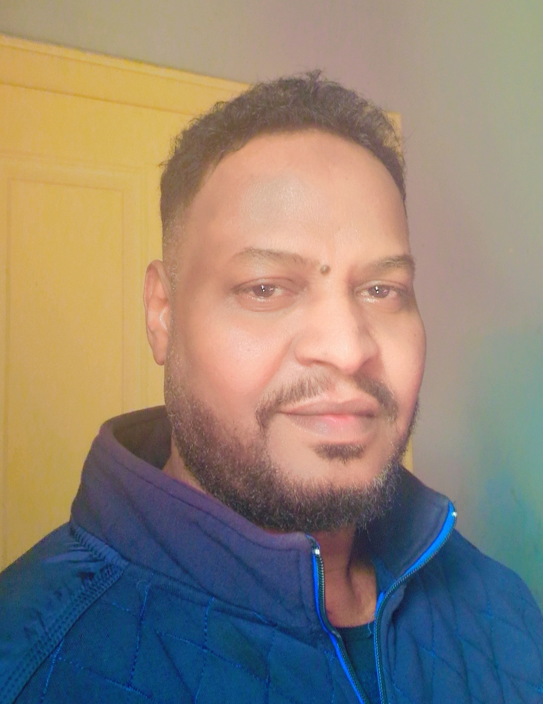

MODUL 01
PC-Hardware
Auswahl und Zusammenbau kompletter Systeme — Prozessor, Mainboard, Arbeitsspeicher, Kühlung und Netzteil eigenständig abgestimmt und verbaut.
DATENBLATT / PORTFOLIO
Informatiker · Softwareentwicklung · PC-Hardware
Informatikstudium abgeschlossen, seither praxisnah weitergebildet: eigene Software-Projekte entwickelt, Hardware bis ins Detail verstanden und zusammengebaut. Bereit, dieses Wissen in einem technischen Arbeitsumfeld einzusetzen.

01 — Über mich
Ich habe mein Informatikstudium 1998 in Khartum (Sudan) abgeschlossen und lebe seit 2016 in Deutschland. In diesen Jahren habe ich nie aufgehört, mich mit Technik zu beschäftigen — im Gegenteil: Ich habe eigenständig reale Software-Projekte umgesetzt und mir tiefes, praktisches Wissen über Computerhardware angeeignet, unter anderem durch den kompletten Zusammenbau eines High-End-PCs in Eigenregie.
Diese Kombination aus theoretischem Fundament und praktischer, selbst erarbeiteter Erfahrung ist der Kern dessen, was ich in eine neue berufliche Aufgabe einbringen möchte: technisches Verständnis, Sorgfalt im Detail und die Fähigkeit, komplexe Dinge einfach zu erklären.
Was ich in Deutschland bisher gemacht habe
Neben meiner technischen Weiterbildung habe ich in Deutschland durchgehend gearbeitet und Verantwortung übernommen — u. a. im Fahr- und Lieferdienst sowie in der Lagerlogistik.
Beruflichen Werdegang ansehen02 — Fähigkeiten
MODUL 01
Auswahl und Zusammenbau kompletter Systeme — Prozessor, Mainboard, Arbeitsspeicher, Kühlung und Netzteil eigenständig abgestimmt und verbaut.
MODUL 02
Entwicklung einer Desktop-Anwendung zur KI-gestützten Video- und Audiobearbeitung, inklusive Bildbearbeitung, Texterkennung und automatisierten Tests.
MODUL 03
Strukturierte, zweisprachige Websites mit HTML, CSS und JavaScript — sauber, responsiv und ohne unnötige Abhängigkeiten.
MODUL 04
Kontinuierliche, eigenmotivierte Weiterbildung über Jahre hinweg — neue Technologien eigenständig erschlossen und direkt in echten Projekten angewendet.
03 — Projekte
PROJEKT 01
Desktop-Anwendung zur KI-gestützten Video- und Audiobearbeitung: Text-zu-Video, Stimmerzeugung, automatische Untertitel und Bildbearbeitung in einer Oberfläche vereint.
PROJEKT 02
Zweisprachige Unternehmenswebsite (Englisch/Arabisch) für ein Beratungsunternehmen — eigenständig konzipiert und mit klarer visueller Identität umgesetzt.
PROJEKT 03
Vollständiger Eigenbau eines leistungsstarken PCs: Komponentenauswahl, Kompatibilitätsprüfung und Montage — von der Planung bis zum ersten Systemstart.
04 — Kontakt
Ich freue mich über eine Nachricht — ob für ein Vorstellungsgespräch, eine Rückfrage oder einfach einen fachlichen Austausch.